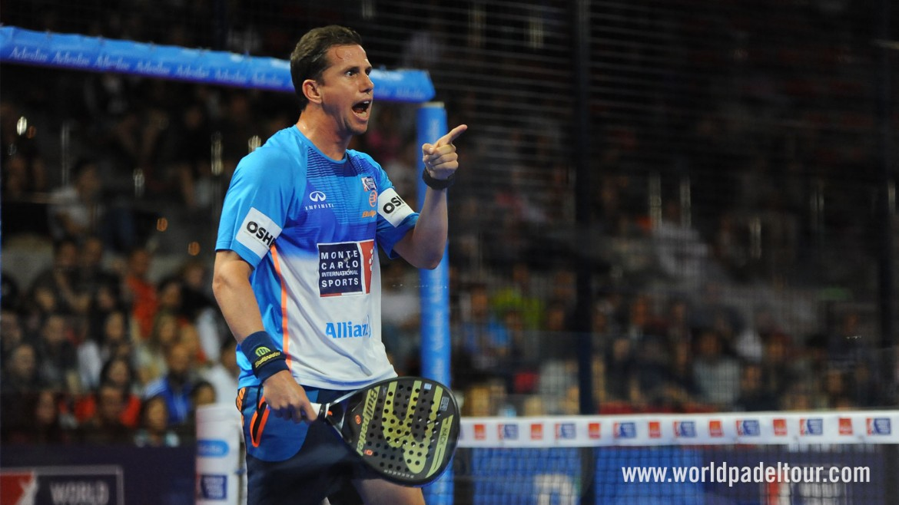

Fernando Belasteguín, conocido como «Bela», es un jugador de pádel profesional argentino que ocupa actualmente el puesto N° 8 del ranking World Padel Tour.
Su posición en la pista de pádel es en el revés, es un jugador diestro y su globo es considerado, por él mismo, como su mejor golpe.
Fue el N.º 1 del mundo más joven de la historia con 22 años de edad. Junto a Juan Martin Diaz, fueron la única pareja en la historia en pasar 1 año y 9 meses invictos, ganando 22 torneos consecutivos, además de ser la única pareja de la historia en estar 13 años como № 1 del mundo y en ganar 170 torneos.
Es el único jugador en la historia del pádel argentino en conseguir 10 Olimpias de plata. En su palmarés destacan cinco Campeonatos del mundo de pádel ganados en la edición de 2002, 2004, 2006, 2014 y 2016. Actualmente es el jugador con más permanencia en el puesto N.º 1 del ranking mundial WPT en la historia.
Willson, es la marca de pádel que apuesta por Fernando Belasteguín. Junto a él han formado una propia marca de ropa y una colección de palas
Adeslas, Adeslas patrocina desde 2015 al jugador argentino. Éste funcionó a la perfección desde el primer momento, consiguiendo numerosos títulos en los tres últimos años.
Es patrocinado también por acciones propias o clubes propios, como la Fernando Belasteguín Academy.
Partidos jugados: 472
Partidos ganados: 411
Partidos perdidos: 61
Efectividad: 87,08
Victorias consecutivas: 63
Lugar de nacimiento: Pehuajo
Fecha de nacimiento: 19/05/1979
Altura: 1,80
Residencia: Barcelona
|
|
 |